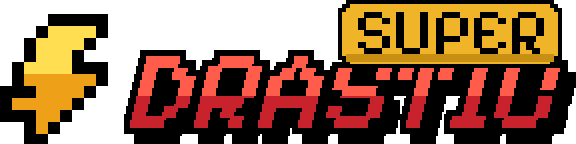
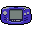
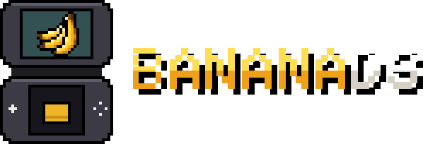

DraStic, built for both screens
DraStic by Exophase, adapted for the RG DS and RG DS Plus.
- 2x rendering with Gengis Engine 3D
- Per-game CPU tuning
- Save slots with both screens as their picture
- Low latency (experimental)
For Anbernic RG DS & RG DS Plus
Two screens. Straight to play.
BananaOS is lightweight Linux built for your handheld. Boot into a pixel-art menu, pick a game and close the lid when it is time for a break.
Beta 0.5.0 · What's new · Check known issues before installing.
New in 0.5.0
Tested by the QA team on both handhelds through twelve beta builds.
Boot: 12.0 s in 0.4.2, timed with a stopwatch by a QA tester (handheld not recorded). BananaDS: fast-forward throughput at 2x on an RG DS Plus, average of 9 games.
Features
Built around two screens, a clamshell and the games you want to play.

CompanionsThe second screen shows your Pokémon party and battles, or status, items and maps for 500+ GBA games.Nintendo DS
Both put each DS screen on its own display and include an in-game menu for save states, shaders and quick settings. Choose a default in Settings > Nintendo DS, or press X in the library to choose one for a game.

DraStic by Exophase, adapted for the RG DS and RG DS Plus.

The melonDS core on BananaOS's display path and menu.
Layout themes
In 0.5.0 a theme file can draw the whole menu: where everything is, how it looks and how it moves. Ten layout themes come built in: pick one in Settings > Display & sound > Theme. To make your own, or edit one of these, use the Banana Theme Studio, the theme editor that runs in your browser.
On the screens: each theme's home screen, as the Theme Studio draws it.
Under the hood
Built with Buildroot, BananaOS combines a Linux kernel, BusyBox init and a dedicated two-screen interface. No desktop or compositor required.
Choose the image for your handheld, flash a microSD card and boot BananaOS.
Beta 0.5.0. Read the known issues before installing. Flashing erases the selected card, so back up anything you want to keep.
.img.gz image in balenaEtcher without unzipping it. Check the selected drive before you start.BANANA drive on your computer and copy games into roms/nds, roms/gba and the other system folders. You can also copy them over Wi-Fi.Already using BananaOS? From 0.4.x, put banana-rgds-plus-0.5.0.update.tar
(RG DS Plus) or banana-rgds-0.5.0.update.tar (RG DS) in
banana/updates on the card and install it from Settings > System > Update. Games, saves and settings stay. From 0.5.0 on,
updates come over Wi-Fi. More in the update guide.
Made by JorreFog (maintainer), jesussaves-ai and marlupatrocinio · Simplified Chinese Majirefy · QA Duncan, Majirefy, Smizzle and nigel777 · UI/UX Numberjerry · everyone we build on
BananaOS is an independent beta project for the Anbernic RG DS and RG DS Plus. Developed with Claude as a coding assistant, directed, reviewed and tested on real hardware by the maintainer. Not affiliated with Anbernic or Nintendo. The handheld model is a fan recreation. Game titles and artwork belong to their owners. No games, ROMs or BIOS files are included. See the project license (MIT) and third-party credits.